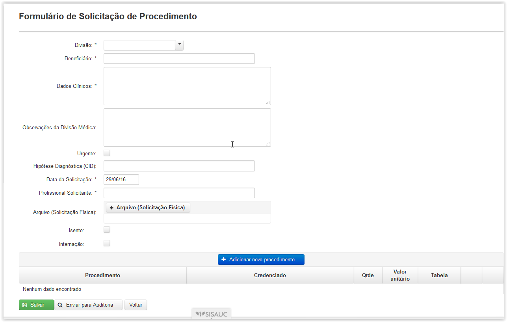
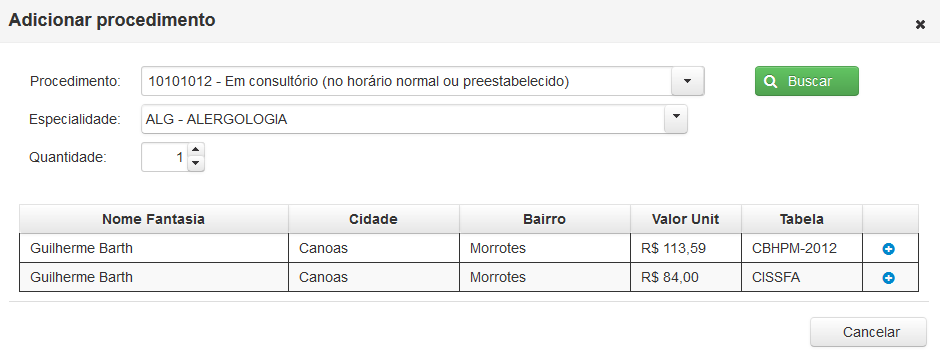

Clicando em 'Solic. Procedimento' surgirá a tela 'Cadastro de Solicitações'(Fig.21) onde será apresentada uma lista das solicitações cadastradas.
É possível facilitar a busca utilizando os filtros Código, Nome Beneficiário e Profissional Solicitante, bastando apenas clicar e digitar a palavra a ser buscada, ou selecionando a opção Estado.
O filtro Estado oferece as seguintes opções:
Não Enviada para Auditoria: Solicitações em que os campos obrigatórios foram preenchidos e salvos;
Enviada para Auditoria: Solicitações em que todos campos obrigatórios foram preenchidos e enviados para auditoria; e
Inconsistente: Solicitações que foram enviadas para a Auditoria Prospectiva mas foram retornadas por alguma inconsistência.
O ícone ( ) e a linha com o fundo em vermelho indicam que a solicitação é urgente.
) e a linha com o fundo em vermelho indicam que a solicitação é urgente.

Fig.21 Tela 'Cadastro de solicitações'
O botão ( ) permite editar uma solicitação Não Enviada para Auditoria ou Inconsistente e permite a visualização de uma solicitação Enviada para Auditoria.
) permite editar uma solicitação Não Enviada para Auditoria ou Inconsistente e permite a visualização de uma solicitação Enviada para Auditoria.

Tela de visualização de uma Solicitação já enviada para auditoria
Ao clicar no botão () será possível inserir uma nova solicitação de procedimento passível de ser atendida por credenciado através da tela 'Formulário de Solicitação'(Fig.22).

Fig.22 Tela 'Formulário de Solicitação de Procedimento'
O campo 'Dados Clínicos' permite descrição completa do quadro do paciente.
O campo 'Observações da Divisão Médica' permite que seja inserida alguma informação pertinente que não possa ser escrita nos 'Dados clínicos' e a sinalização da 'urgência' deverá ser criteriosa.
O campo 'Hipótese Diagnóstica (CID)', apesar de não obrigatório, permite maiores dados para a análise da solicitação e codifica a patologia suspeita através do código da Classificação Internacional de Doenças mais atualizada (CID 10).
Nesta tela os dados deverão ser preenchidos conforme o pedido feito pelo médico solicitante, que poderá ser escaneado e anexado em arquivo pdf.
A tela permite a sinalização de exames realizados com a finalidade de Inspeção de Saúde marcando a opção 'Isento'.
Além disto, permite a informação da necessidade de Internação Hospitalar para realização do procedimento.
Se confirmada a necessidade de Internação, surgirão quatro opções de Acomodação a serem escolhidas conforme previsto em regulamento da SARAM: Apartamento,Enfermaria,UTI e Domiciliar (Fig.23).

Fig.23 Janela de informação sobre a Acomodação
Ao clicar em () aparecerá uma tela que permitirá a localização do procedimento solicitado pelo código ou descrição do mesmo e clicando no botão ( )(Fig.24).
)(Fig.24).
A quantidade de procedimentos solicitada pelo profissional deverá ser informada antes de clicar no botão () para adicionar o procedimento à solicitação.

Fig.24 Tela 'Adicionar procedimento'
Após o preenchimento do Formulário de Solicitação o Atendente do FUNSA enviará o pedido para a Auditoria Prospectiva que procederá à análise técnica, clicando no botão ( ).
).
É possível também salvar uma solicitação para ser enviada mais tarde para a auditoria através do botão ( ).
).